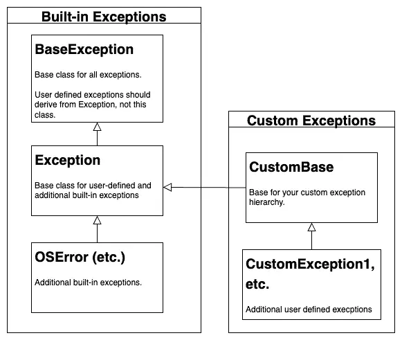

Many object-oriented programming languages support using and handling “built-in” exceptions and writing custom exceptions for user-defined classes and packages. Writing and raising custom exceptions in Python is very easy to do. But before you read how to do it and then go off to try it, let me set your expectations a bit differently by way of a helpful metaphor:
Writing custom exceptions is really easy – as easy as a two-year-old crossing the street.
Now that I have frightened you enough for more than one article, let me hasten to reassure you that just going off and writing some custom exceptions, even if you don’t need them, won’t get you run over. You might suffer some temporary embarrassment over a pull request. At worst, it might make your code harder to maintain than it might be otherwise.
Nevertheless, the point of this article is not just to point you at the street and hope for the best but to share how we might “look both ways first” to improve our code. Here’s how it will break down.
In part one, Creating Custom Exceptions, I will acknowledge the time-honored development practice of letting go of mom’s hand and running out in the street.
In the second part, Custom Exception Best Practices, I’ll share some best practices to consider. I was the developer equivalent of a two-year-old once, so in this section, I will try to write the article I needed at the time.
Creating Custom Exceptions¶
The Custom Exception Class¶
We all hate it when our favorite food goes missing, so let’s model the unfortunate case where we have run out of something.
class RanOutOfSomething(Exception):
pass
That was too easy. We’ve written a custom exception in two lines of code, and the second line was just to let Python know that we finished declaring our RanOutOfSomething exception class. By the way, an alternative syntax is to use a docstring here:
class RanOutOfSomething(Exception):
"""The cupboard is bare."""
Either way, the real work is done on the first line. We declare a class as a child of Python’s built-in Exception, and we’re done.
Raising Custom Exceptions¶
Raising (throwing) such an exception is even easier than creating them. We use the same mechanism (raise) as we would for a built-in exception. Here’s how that looks in Jupyter:

Further Customizing Exception Behavior with __init__:¶
I’m a big fan of simple exception classes like RanOutOfSomething that take a string because they assume that the code raising the error has the best insight into what went wrong. This idiom is common in the Python community, too. Packages that use it include NumPy and boto3.
To give you an idea of how you might further customize the behavior if you needed to, however, let’s write a more complex version of RanOutOfSomething, which will call NoMoreSomethingException, which will do the following:
If called with a string, it will use the default.
If called with nothing, it will embarrass you. This code enforces telling the user what went wrong.
If called with an optional value, “what,” it will format that into a standard error message.
I’ll warn you upfront that this code is likely about 98% more complicated than you need, but that said, here it is:
class NoMoreSomethingException(Exception):
"""A flexible reminder to go to the store.
Can be called with a full string or with "what" parameter to get a default message, e.g.
NoMoreSomethingException("We're out of polar ice caps. Bring a boat.")
NoMoreSomethingException(what="cheese")
"""
def __init__(self, message=None, what=None):
if what is not None:
msg = f"We're out of {what}."
elif message is None:
msg = "An inconsiderate colleague ran out of something. Go look in the source; he hates you."
else:
msg = message
super(NoMoreSomethingException, self).__init__(msg)
To test this out, we don’t necessarily have to raise the error. Since exceptions are just classes, we can see how they will appear by using print along with the repr function.
ex1 = NoMoreSomethingException("We're out of coffee! Development work cannot continue!!!")
ex2 = NoMoreSomethingException(what=["apple juice", "Pop Tarts"])
print(repr(ex1))
print(repr(ex2))
# Don't do this:
bad = NoMoreSomethingException()
print(repr(bad))
## OUTPUTS
NoMoreSomethingException("We're out of coffee! Development work cannot continue!!!")
NoMoreSomethingException("We're out of ['apple juice', 'Pop Tarts'].")
NoMoreSomethingException('An inconsiderate colleague ran out of something and is making you read the source to find out what it is.')
By the way, if you still need to hide the government secret of what we ran out of, NoMoreSomethingException("") gets you there.
Of course, you can do many other customizations, for example, overriding dunder methods or supporting the numerical error codes that some downstream system returns. However, the clarity of the exception name and a customizable message string is often 99% of what you need.
With that said, you now know where the street is. In our next section, let’s discuss how we can look both ways before crossing.
Python Custom Exception Best Practices¶
In this section, we want to discuss three things you should consider before implementing custom exception classes in Python.
Understanding the existing exception hierarchy in Python and where custom exceptions fit in.
Deciding if we even need custom exceptions, or whether we can use the built-in exception classes.
Thinking about additional design considerations if we are using custom exceptions.
User Defined Exceptions vs. Built-In Exceptions¶
As we’ve seen above, when we create user-defined exceptions in Python, we derive our custom class from Exception, not from BaseException. The informal class diagram below gives an overview of how the different classes fit together.

The Python documentation advises that custom exceptions should derive from Exception, not BaseException. To give you an idea of why this is so, consider two of the other classes derived from BaseException: SystemExit and KeyboardInterrupt. As the names imply, these are very low-level classes that we might handle, but generally wouldn’t need to override.
As we show here, the Exception class is a bit of a chameleon. It forms the basis of several important built-in classes on the one hand, and on the other, it is the right place to begin to define our user-defined exception classes.
On the built-in exception side on the left, many classes in Python derive from OSError. Moreover, several earlier classes have been reworked as aliases of OSError as of Python 3.3. For example, in newer versions of Python IOError == OSError evaluates to True! There are other classes here as well, however. Here is a more complete hierarchy chart for the built-in exceptions.
On the right-hand side of the chart image above, we show a possible user-defined class hierarchy. As shown here, this could be done as a common base class at the root with other classes derived from it. We’ll discuss this in a later section on class design. Before we discuss what the design should be, however, let’s first discuss the issue of whether you even need to design anything at all.
YAGNI: You Ain’t Gonna Need It¶
I think the best question you can ask yourself to decide if you really need one or more custom exceptions in your code is this one: Am I writing an application or a library?
If you’re writing a library, then there’s a very good chance that custom exception classes make sense. You want your users to be able to distinguish between an error in using your library and an error taking place somewhere else.
However, for every library developer, there are dozens if not hundreds of end users who are developing Python applications, doing data analytics, working in DevOps – or doing any number of other useful things with Python. If this is you, it’s quite possible that you can get by on a small number of built-in exceptions plus whatever the exceptions defined in whatever libraries you might be using.
For example, the best practice of checking function inputs can often be handled with two built-in exceptions. A TypeError can be used to remind the user of the correct type if they pass the wrong one to a function, while a ValueError can be raised if the type is correct but the value is out of range or can’t be supported – for example, a two-digit month that’s less than one or greater than twelve. To document that your code has encountered some other condition that you thought would never, ever in a zillion years happen (but of course does the day after you ship, lucky you), a simple Exception is sufficient. If you’re going to be working seriously in Python, it’s worth a few minutes of your time to read through the documentation on the Python exception classes so you understand what’s available.
Of course, even within an application, it’s possible you may want to define a very small number of custom exceptions to mark errors that occurred at a certain layer. For example, you may want to distinguish errors taking place in the model from those happening in the controller. However, if you’ve structured your code well, the stack trace should provide that same information without resorting to custom exception classes.
Design Decisions¶
We’ve been discussing aspects of exception design all along. We generally want a simple override unless we need further customization such as reporting an underlying error. This is common practice in HTTP libraries for example, where we might want the string response “Not Found” and the appropriate HTTP status code, 404.
The only final thing to consider, then, is the issue of having a single root exception class or not for your library. Different libraries take different approaches to this. The Pandas library derives each custom exception directly from Python’s Exception class, in an ad-hoc fashion, for example.
Since I haven’t seen too many notebooks that wrap their Pandas code in try/except blocks, that’s probably not a big problem. The more commonly scripted client library for Amazon Web Services, boto3, takes the alternative approach of having a common root exception, Boto3Error, from which all other exceptions are derived. This makes it easy to add error handling any time you make a call, which I think works really well for a client library like this.
Closing Thoughts¶
Software developers love grand designs and framework development because sometimes that can be a lot more interesting than the day-to-day grunt work of shipping products. Python custom exceptions are easy to add, but chances are we don’t need them if we’re working on an application. If that’s the case, the best thing we can do for our users is to use well-known exceptions together with an error string providing detailed information about how to resolve the issue.
The true gold standard here is not whether we can cleverly override a Python constructor, but whether someone who is the unfortunate exception of a late-night support call can read the exception message and have a reasonable chance of being able to address the issue and go back to sleep.
I realize I’m on a bit of a soapbox here.
raise FellOffSoapBoxError("Thanks for reading!")